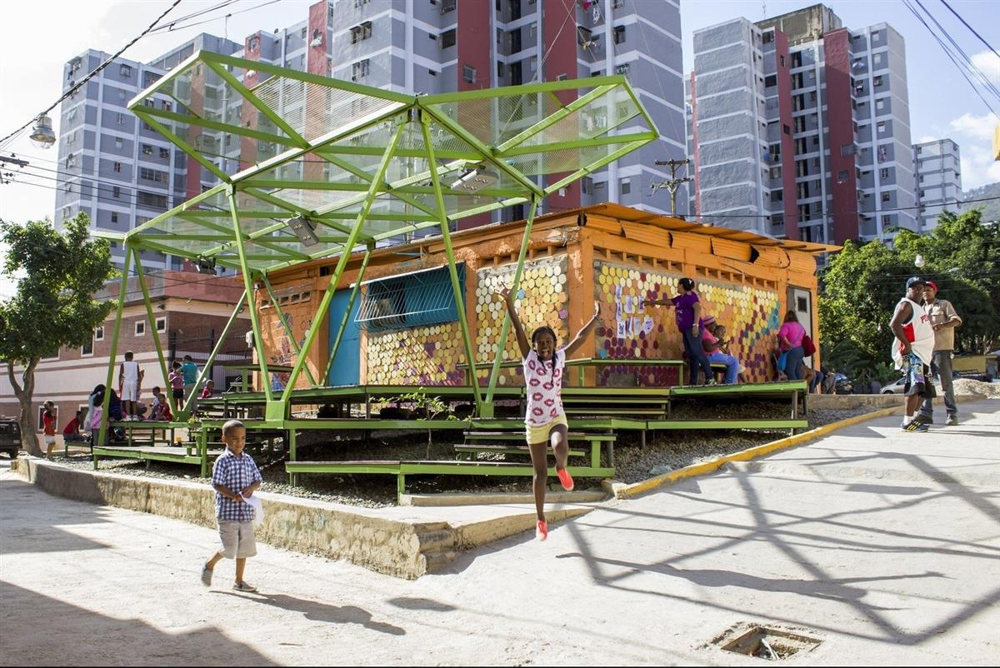
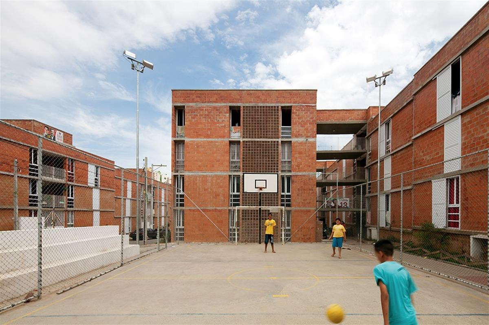
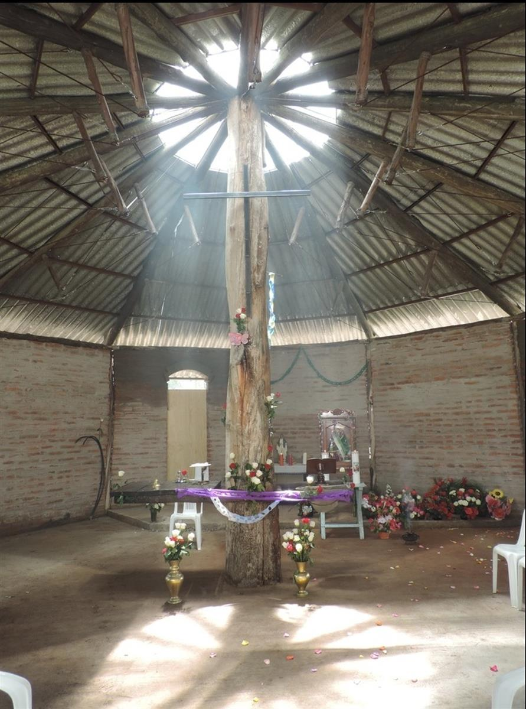
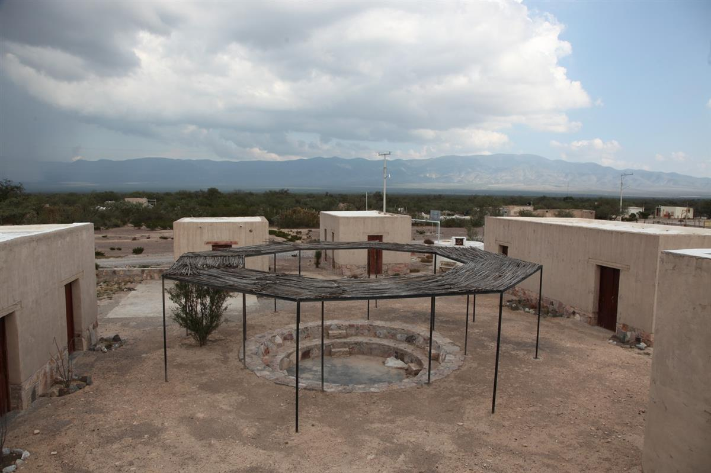
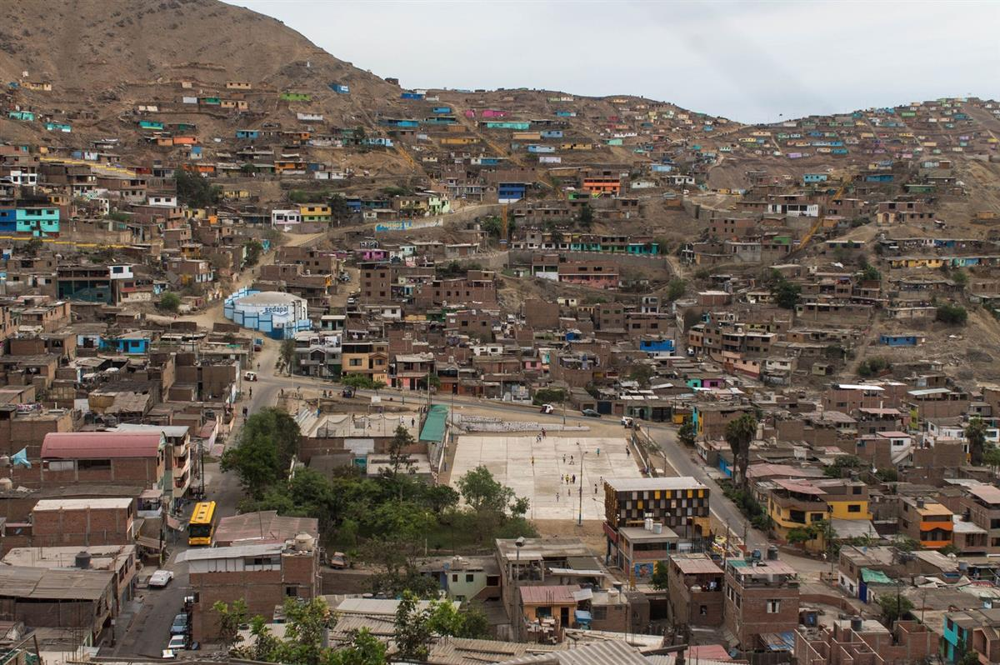
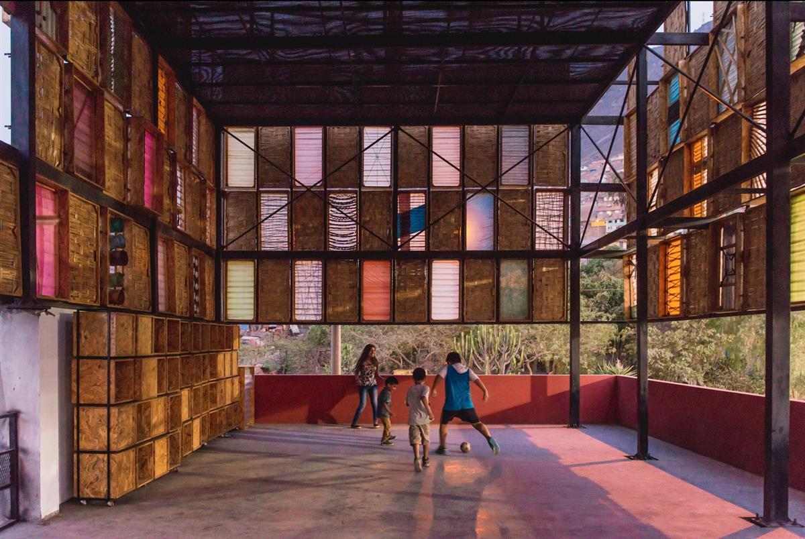
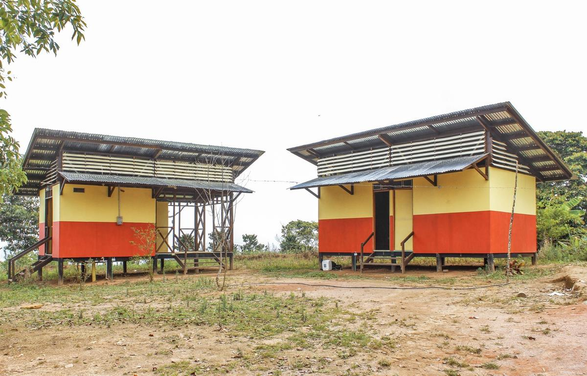

Espacios de Paz / PICO Estudio & Movimiento Por la Paz y la Vida. . Image Cortesía de ASF International Awards
- 04:00 - 23 August, 2019
- by Nikos A. Salingaros, David Brain, Andrés M. Duany, Michael W. Mehaffy & Ernesto Philibert-Petit
- Translated by Fabian Dejtiar
Socially-Organized Housing: Biophilia, Connectivity, and Spirituality
The series of articles developed by Nikos A. Salingaros, David Brain, Andrés M. Duany, Michael W. Mehaffy and Ernesto Philibert-Petit researches the peculiarities of social housing in Latin America.
This time, the proposal focuses on how human health and well-being depend on the geometry of the environment. Check the previously published pieces and the new article, below.
-
Biophilia, Connectivity, and Spirituality.
Geometry that promotes human wellbeing
The notion of “biophilic architecture” establishes that human health and wellbeing strongly depend on the geometry of the environment, as expressed in particular configurations, surfaces, materials, details, light, and accessibility to plants and other forms of life (Kellert et al., 2008; Salingaros, 2013; 2015). All of these factors contribute to the success of any building, and to social housing in particular. Evidence-based design is based on knowing how a human being is affected by his/her environment.
The appropriate geometry that promotes human wellbeing is unsurprisingly the opposite of the geometry of power described in the preceding section. A living geometry is loose, complex, and highly interconnective. It is the geometry of the owner-built favela, and also the natural geometry of a river, a tree, or a lung. Without any imposed constraints, human beings will build according to this natural geometry (Alexander, 2001-2005; Salingaros, 2006). Note that many self-built projects do not entirely follow this generative geometry, because the government defines a rectangular grid of plots before giving the land over to individual builders. Thus, it already imposes an industrial grid that is impossible to change. We will discuss later how this restrictive practice can be avoided.

Espacios de Paz 2014 en Pinto Salinas, desarrollado por Oficina Lúdica y PKMN. Image Cortesía de PICOGeometry and surface qualities either help or hinder an emotional connection with the human beings who use them. We should balance the study of structure with the study of form and pattern. In the study of structure, we measure and weigh things. Patterns of interaction cannot be measured or weighed, however: they must be mapped, and they have to do more with quality. To understand a pattern we must map a configuration of relationships. We believe in the concept of the city as an organism, not only in the sense that it tries to develop an organic structure, but also because of the complex relationship this structure establishes with the organizational patterns of its users. Here is a list of some key concepts that we need to work with:
-
- People become psychologically sick and hostile in an environment devoid of nature. Biophilia is innate in our genes. Urban quarters need to blend with and not replace natural habitats.
-
- We connect to plants through their geometrical structure, thus some geometries are more connective to the human spirit than others. We feel comfortable with a built environment that incorporates complex natural geometry showing an ordered hierarchy of subdivisions.
-
- Residents should love their homes and neighborhoods. That means that the form of the immediate built environment must be spiritual and not industrial.
-
- Industrial materials and typologies generate hatred for the built environment. We grow hostile to surfaces and forms that do not nourish us spiritually, because we feel their rejection of our humanity. If not hatred, they often generate a kind of indifference that might actually be worse for human communities. The use of these materials and typologies has commonly been presented as dictated by the nature of building technology and the economic realities of the day. The result is that people often take for granted the unavoidable alien character of a built environment that delivers quantity without meaningful qualities.
-
- The sacred character of traditional villages and urban quarters cannot be dismissed as outmoded nonsense (as is done nowadays). This is the only quality that connects a village on the large scale to people, hence indirectly to each other. We need to build it into the urban quarter.

Urbanization of Jardim Vicentina / Vigliecca & Associados. Image © Leonardo FinottiSocieties built towns around sacred spaces
It is not easy to identify the sacred structure of any settlement, let alone plan for it in a new one. We need to look at the patterns of human activity in traditional settlements, and ask which activity nodes are valued above all others. Usually, it is where local residents come together to interact. Those nodes (if they are present at all) could be interior, but very often they are elements of urban space (Gehl, 1996; Salingaros & Pagliardini, 2016). People can connect to plants and to other people at the same time in properly designed (configured) urban spaces. Those places are then responsible for the societal cohesion of the neighborhood.
Something is “sacred” if we attribute to it a value above and beyond its material structure. A good rule is to ask if we are willing to fight to protect it from damage or destruction. Do many persons, some necessarily strangers, feel the same way about this? Do we consider a place to have meaning for the community as a whole so that a group of people will actually come together to protect this particular object or site? In ancient societies, an old tree, a large rock, prominent high ground, a particular stream or spring could be considered sacred (in the deepest religious sense), and thus protected from damage. Those societies built towns around sacred spaces, and endowed parts of what they built with a sacred meaning. Today, that quality is unfortunately dismissed as anachronistic.

Chapel San José de Oales. Image Cortesía de Taller Con Lo Que Hay / ENSUSITIO Arquitectura
For example, the oldest social nodes are a water source (community tap or well), place of worship (Church or Temple), gathering place (cafe/bar for men), children’s playground, etc. In the case of a Church, we do have a genuinely sacred structure, and it is most often built in the original geographic center of a settlement. It serves the cohesive function of community: “ecclesia” is the gathering together of common worshippers, which is just as much a cohesive social act as it is a purely religious act. It is no coincidence that the non-religious gathering place, the coffeehouse, is often situated in front of the Church in a traditional village. The coffeehouse substitutes as an alternative gathering place for those who do not subscribe to the sacred meaning of the local religion.
Another node of the sacred structure is the central plaza or open square, which, in temperate climates, accommodates social life in the evenings. The Latin tradition of the evening walk around the central square establishes a value for the plaza in the social cohesion of the community. What we refer to as “sacred structure” in this paper refers to ALL of these cohesive functions. We see cohesion as a natural device, and interpret its various manifestations as simply differing degrees of connectivity on overlapping channels. A central square is a place for social cohesion, whereas a church connects its worshippers to the highest level, which is their creator.
Non-religious societies in some cases successfully substituted secular “sacred spaces” to hold their societies together. For example, communist countries built the “House of the People” or “Workers Club”, which took the role of a gathering place for at least part of the community. In upper-income suburbs (for example, in gated communities) the same forces apply, but are unresolved because of total automobile dependence. There is no sacred space, no common meeting point and place of social interaction. Contrary to the intent of developers who build them, a clubhouse and community swimming pool in high-income suburban clusters do not serve this function. The urban geometry never establishes a common social value among the residents, hence leads to a serious lack of socialization.

Social center 'Las Margaritas' / Dellekamp Arquitectos + TOA Taller de Operaciones Ambientales + Comunidad de Aprendizaje. Image © Lara BecerraThe sacred place that we are describing is absent from contemporary urban construction (Duany et al., 2000). We see superficial copies created without any understanding of their deep cultural meaning. Consequently, a dramatic decline in the sense of community leads to a dramatic increase in social alienation. Certainly both the Right and the Left have never recognized the need for spirituality in the fabric of social housing. Nevertheless, a sense of the sacred is inherent in all traditional housing (in some places more, in some places less) independently of their origin. By contrast, military/industrial dormitories are not only rejected by their inhabitants, but are hated because no one can connect with their form and image.
A human being cannot truly belong to those buildings, nor can the image of such a building belong emotionally to a human being, and thus people turn to hating them and eventually destroying them. Buildings of this type, built in the 1960s with the very best of intentions, abound around the world. They do not catalyze an emotional attachment to the large scale. Schemes to have “shopping streets” and kindergartens (as a substitute for sacred space) on the fifth floor of high-rise block housing proved ridiculous. Hard concrete plazas tend to be disconnecting and hostile, generating a feeling of anger instead of connectivity.
Gathering places are important
Christopher Alexander and his collaborators built social housing in Mexicali, Mexico (Alexander et al., 1985). A prototype house cluster was built around a builder’s yard that served the construction needs of the neighborhood. That could have served as the sacred space. Whereas the houses themselves were a tremendous success (and survive with their original owners years afterwards), the builder’s yard was not. The government failed to maintain it, yet did not give it over to another community or private use. It was abandoned, and its connections to the individual houses sealed off by the owners. The government never helped it to become a gathering place. No effort was made to endow a sacred value to the builder’s yard.

Cortesía de Archivo Proyecto FitekantropusThe category of “the sacred” is being defined broadly enough to encompass the normative order of civic spaces, and it is important to include the full spectrum of social relations from the private, to the communal (parochial), to the public (civic). Traditional villages rise to the level of the communal, but NOT to the level of civic culture. Gathering places are important, not simply because they encourage communal cohesion (which tends to be based on homogeneity), but because the range of different types of gathering places allows for a range of different kinds of social relations. Relations in public have as much to do with defining social distance as with cohesion. Often, the cohesion associated with urbanism is mediated only by the sharing of a common sense of place. Places are, in a sense, an embodiment of what we call “social capital”. They ARE social relationships, not just containers or facilitators of social relationships.

© Eleazar CuadrosThere may be a problem with emphasizing the sacred in this discussion. In the third world even more than in places like the USA, the constituencies for social housing are often caught up in some form or another of democratization movement. Particularly in the global cities of the world, we don’t wish to make it sound as if we are promoting a return to the condition of a kind of tribalism (which is the way traditional villages can seem). Places do require materialization of the “sacred”, but not in the common usage of the word. Gathering places are important, but their structure (and their relationship to the social structure) is more complex than just acting as the containers or opportunities for people to bond. We need to look at the patterns of interaction in traditional cities as well as tribal villages and settlements that are homogeneous by class. Those patterns of interaction are structurally varied and are not simply about communal cohesion.

Architectural System for Rural Social Interest Housing / Ensamble de Arquitectura Integral. Image © Juan Pablo PardoIn conclusion, a settlement must, above all else, establish a sacred structure by some means, so as to connect emotionally with its residents. Sacred structure also helps people to connect to a higher order. This higher order encompasses three functional features: (a) it is used as a cohesive means to form community; (b) it is constructed upon the cooperation of the discourses of a group of people and is not the unilateral decision of an individual; and (c) it is loaded with a powerful meaning for the community. If most or all residents connect with the physical sacred structure, then they connect indirectly with each other. This simple principle establishes a sense of community, which survives the difficult conditions of life. It keeps forces oriented towards maintaining the physical structure of the community, instead of turning them against the physical structure in those cases when it is not valued.
Originally presented by N.A.S. as a keynote address to the Brazilian and Ibero-American Congress on Social Housing, Florianópolis, Brazil, 2006.
* Traducción al Español de Nuria Hernández Amador, revisada por Ernesto Philibert Petit.
Bibliography
- Christopher Alexander (2001-2005) The Nature of Order: Books One to Four (Center for Environmental Structure, Berkeley, California).
- Christopher Alexander, Howard Davis, Julio Martinez & Donald Corner (1985) The Production of Houses (Oxford University Press, New York).
- Andrés Duany, Elizabeth Plater-Zyberk & Jeff Speck (2000, 2010) Suburban Nation (North Point Press, New York).
- Jan Gehl (1996) Life Between Buildings: Using Public Space (Arkitektens Forlag, Copenhagen, Denmark).
- Stephen R. Kellert, Judith Heerwagen & Martin Mador, Editors (2008) Biophilic Design: the Theory, Science and Practice of Bringing Buildings to Life (John Wiley, New York).
- Nikos A. Salingaros (2006, 2014) A Theory of Architecture (Sustasis Press, Portland, Oregon and Vajra Books, Kathmandu, Nepal).
- Nikos A. Salingaros (2013) Unified Architectural Theory: Form, Language, Complexity (Sustasis Press, Portland, Oregon and Vajra Books, Kathmandu, Nepal). Chapter 10 published in ArchDaily, 26 April, 2015. https://www.archdaily.com/623966/unified-architectural-theory-chapter-10/
- Nikos A. Salingaros (2015) Biophilia and Healing Environments, (OfftheCommonBooks, Amherst, Massachusetts), available free online from Terrapin Bright Green LLC, New York. https://www.terrapinbrightgreen.com/report/biophilia-healing-environments/
- Nikos A. Salingaros & Pietro Pagliardini (2016) “Geometry and life of urban space”, Chapter in: Back to the Sense of the City, 11th Virtual City & Territory International Monograph Book, Centre of Land Policy and Valuations (Centre de Política de Sòl i Valoracions), Barcelona, Spain, 2016, pages 13-31. https://upcommons.upc.edu/bitstream/handle/2117/90890/CH00_CONTENTS%20INTRO_geometry.pdf
SOURCE: ARCH DAILY